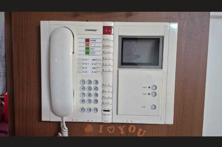
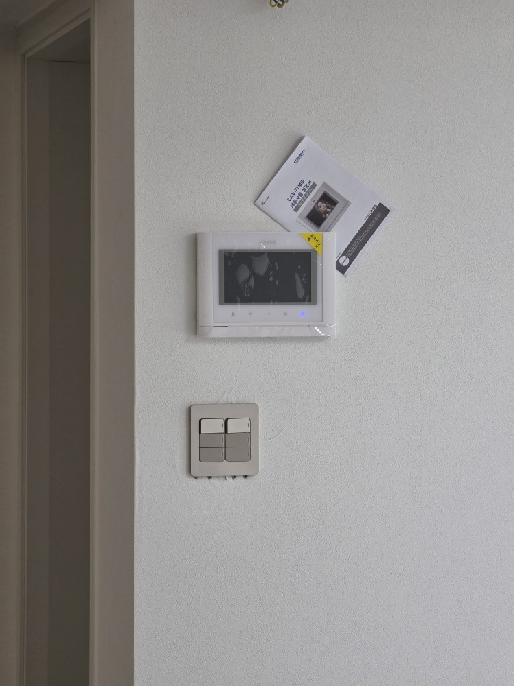
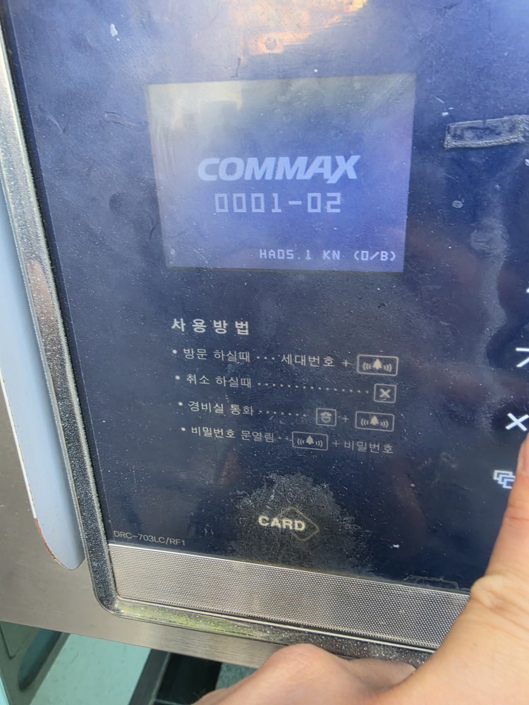

STEP 01 · 기존 철거 전
1. 기존 구형 인터폰 상태 점검 및 배선 확인
노후로 통화·영상 불량이 발생한 기존 구형 비디오폰(한창 및 코맥스 480 시리즈 구형 규격)을 점검하고 1층·지하주차장 통신 라인을 체크합니다.
중랑구 망우동·면목동 아파트와 빌라의 구형 인터폰 고장·화면 불량으로 비디오폰 교체 수리가 필요하신가요? 기존 코맥스 480 시리즈 호환 기종부터 대형 화면 코맥스 77MG(CAV-77MG), 구형 한창 → 경동나비엔 호환형까지 현장 배선에 맞춰 완벽 호환 설치하며, 1층·지하주차장 로비폰 연결과 월패드·도어락 문열림 연동까지 한 번에 해결해 드립니다.

1단계 기존 상태 · 구형 인터폰 노후 및 연동 불가
3~4단계 완료 · 호환 신형 교체 & 월패드·도어락 연동망우동·면목동 현장에서 진행한 기존 상태 확인 → 중간 배선·마감판 작업 → 신형 기기 장착 → 최종 문열림 연동 과정입니다.
노후로 통화·영상 불량이 발생한 기존 구형 비디오폰(한창 및 코맥스 480 시리즈 구형 규격)을 점검하고 1층·지하주차장 통신 라인을 체크합니다.
 STEP 02 · 중간 배선·마감판
STEP 02 · 중간 배선·마감판
벽면 매립함 내부 배선을 코맥스 480 시리즈 호환 및 코맥스 77MG·경동나비엔 규격에 맞춰 정밀 결선하고, 기존 타공 면적을 가리는 마감판을 수평 고정합니다.
신형 비디오폰 본체를 결합해 1층 공동현관 로비폰과 지하주차장 호출 영상·음성 통화 및 공동현관 문열림 신호를 정상 개통했습니다.

STEP 04 · 최종 연동 완료거실 월패드 내부 송신 모듈과 현관 디지털 도어락 수신기를 매칭해, 거실 화면에서 버튼 한 번으로 현관 도어락까지 원격 개방되도록 마무리했습니다.
| 출장 시공 지역 | 서울특별시 중랑구 망우동 · 면목동 및 중랑구 전지역 |
|---|---|
| 호환 가능 주요 기종 | 코맥스 480 시리즈 호환 전 모델 / 코맥스 77MG (CAV-77MG) 설치·연동 / 구형 한창 → 경동나비엔 호환 교체 |
| 공동현관 로비폰 연결 | 1층 현관 로비폰 및 지하주차장 공동현관 로비폰 호출 영상·통화·문열림 완벽 호환 |
| 월패드·도어락 연동 | 비디오폰 연동 · 월패드 연동 무선 송·수신기 매칭으로 현관 디지털 도어락 원격 문열림 지원 |
| 벽면 마감 처리 | 구형 매립형 비디오폰 철거 후 크기 차이를 완벽히 가리는 전용 스틸/아크릴 마감판 시공 |
건물 배선 방식(아날로그 4선식 / 디지털 BUS 방식)에 맞춰 정확히 호환되는 모델로 시공해야 고장이 없습니다.
망우동·면목동 공동주택에 많이 설치된 코맥스 480 시리즈(CAV-480 등) 사용 세대도 현관 카메라·경비실·1층 로비폰 신호 규격에 맞춰 완벽 호환되는 신형 제품으로 깔끔하게 교체·수리됩니다.
시원한 대화면을 원하시는 세대에는 코맥스 77MG(CAV-77MG) 모델로 호환 설치가 가능하며, 기존 벽면 타공 크기에 맞춘 전용 마감판 시공으로 도배 훼손 없이 깔끔하게 마감됩니다.
코맥스 480 시리즈 호환 기종과 코맥스 77MG 모두 연동 모듈 장착 시 거실 월패드에서 1층·지하주차장 공동현관과 현관 도어락 문열림을 동시에 제어할 수 있습니다.
망우·면목·중랑구 비디오폰 교체 수리 전문 도어마스터는 망우동, 면목동, 상봉동, 신내동, 묵동, 중화동 전 지역 당일·예약 출장이 가능합니다. 코맥스 480 시리즈 호환 교체를 비롯해 코맥스 77MG 설치, 구형 한창 비디오폰 호환 교체, 비디오폰 연동·월패드 연동이 필요하시면 기존 기기 사진 1장만 문자로 보내주세요.